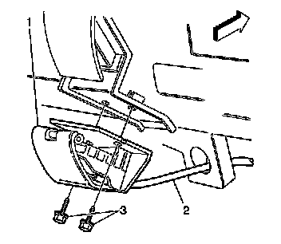
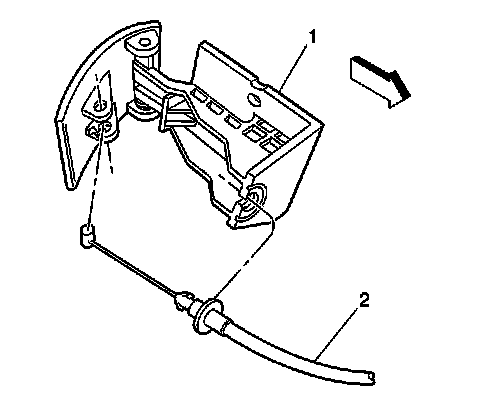
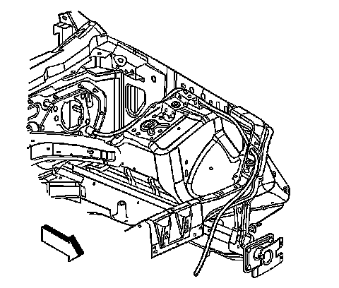

Hood Latch Release Cable: Service and Repair
Hood Primary Latch Release Cable Replacement
Removal Procedure
1. Open the hood.
2. Remove the hood latch. Refer to Hood Primary and Secondary Latch Replacement (Service and Repair) .
3. Disconnect the hood release cable from the hood latch.
4. Tie a piece of string around the hood release cable. This will ease the installation of the hood release cable through the engine compartment.

5. Remove the fasteners (3) securing the hood release handle (1) to the vehicle.

6. Disconnect the hood release cable (2) from the hood release handle (1).

7. Remove the hood release cable grommet from the wheel opening.
8. Remove the hood release cable from the vehicle.
Installation Procedure
1. Transfer the string to either end of the new hood release cable.
2. Route the string and the hood release cable into the passenger compartment.
3. Remove the string from the hood release cable.
4. Seat the hood release cable grommet into the wheel opening.
5. Connect the hood release cable (2) to the hood release handle (1).
Notice: Refer to Fastener Notice (Fastener Notice) .
6. Install the fasteners (3) in order to secure the hood release handle (1) to the vehicle.
Tighten the fasteners to 2 N.m (18 lb in).
7. Pull the string and the hood release cable through the engine compartment.
8. Remove the string from the hood release cable.
9. Connect the hood release cable to the hood latch.
10. Install the hood latch. Refer to Hood Primary and Secondary Latch Replacement (Service and Repair) .
11. Close the hood.